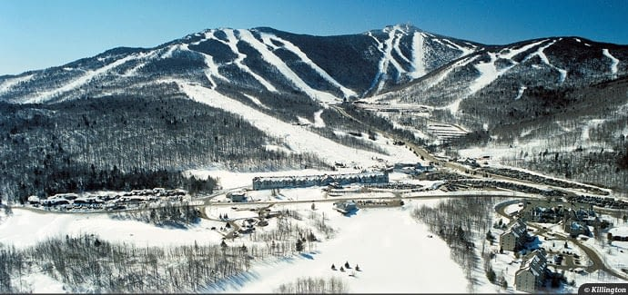
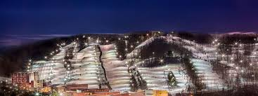
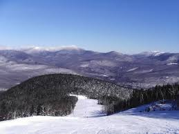
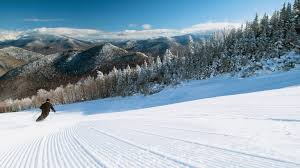

The Top Ski Mountains in the Northeast
About the Website
This website has been completed by a student as a project for a Syracuse University class titled IST 263. The idea behind the website was to shine light on the various ski mountains within the Northeast. The Northeastern United states also known as the Northeast, is home to some of the best all around ski resorts in the country. This website is designed to give people an understanding of what the northeast has to offer in respect to skiing. We will be diving deeper into 5 particular ski resorts, across 5 different states: Vermont, Pennsylvania, Maine, New York, and New Hampshire.
Five Ski Resorts, Five States
Vermont
Killington Mountain
Pennsylvania
Bear Creek Mountain
Maine
Sunday River
New York
WHiteface Mountain

New Hampshire
Loon Mountain
About Me
My name is Matt Denny and I am currently a junior at Syracuse University who has a passion for skiing. Raised a skier at the age of 3, I have always loved being able to go out and adventure whenever possible. I was born in Connecticut and grew up traveling to numerous mountains within the Northeast for much of my life. One of my more recent goals was to ski the swiss alps, which I was able to accomplish in December of this year.